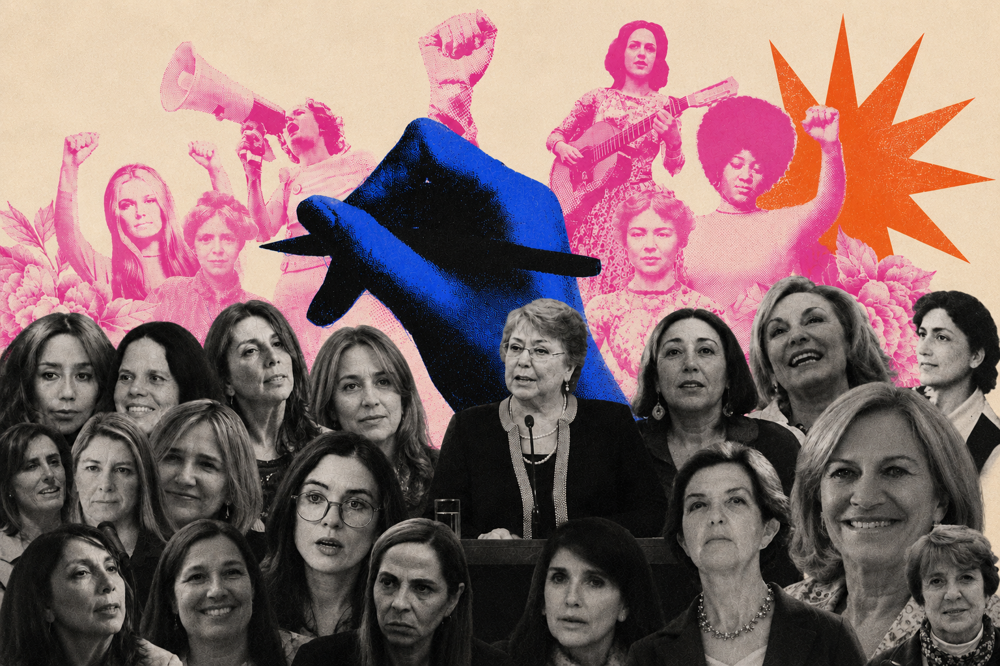
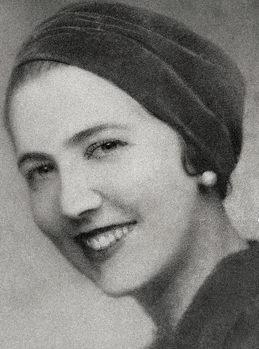
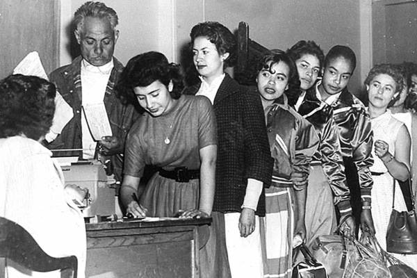
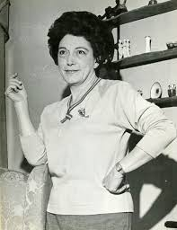
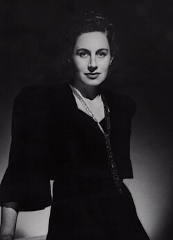
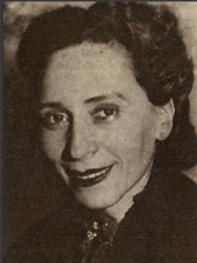
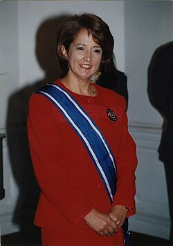
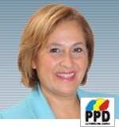
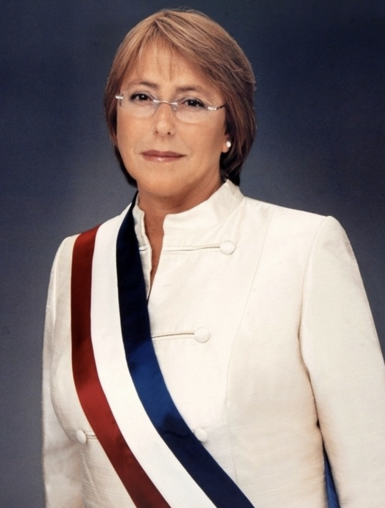
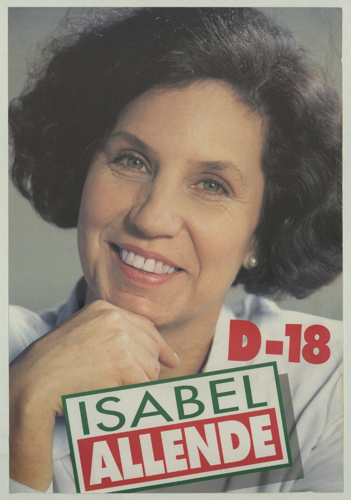

Parlamentarias
Representantes en la Cámara de Diputadas y Diputados y en el Senado.
Mujeres y poder político en Chile
El ascenso de liderazgos femeninos en el Congreso, los gabinetes y los partidos.
Cómo las mujeres ampliaron su presencia, liderazgo y diversidad en la política chilena.
Recorrer la historia ↓
La representación actual
Hoy en Chile contamos con 68 parlamentarias, 9 ministras y 2 presidentas de partidos políticos. Pero para llegar a este nivel de representación femenina se recorrió un largo camino. Hay mujeres pioneras e hitos que abrieron la puerta en la historia del liderazgo político femenino en Chile.
Representantes en la Cámara de Diputadas y Diputados y en el Senado.
Mujeres en carteras del Poder Ejecutivo.
Mujeres en la conducción de colectividades políticas.
Del voto a la Presidencia
Participación ciudadana
Las mujeres obtienen el derecho a votar en elecciones locales, el primer reconocimiento formal de su participación cívica.

Gobierno local
Apenas un año después de ejercer el voto, algunas mujeres son electas para dirigir municipios, entre ellas Alicia Cañas Zañartu.

Derecho a sufragio
La Ley N.º 9.292 reconoce el derecho de las mujeres a votar en elecciones presidenciales y parlamentarias en igualdad de condiciones con los hombres.

Congreso Nacional
Con el sufragio pleno recién conquistado, las mujeres comienzan a llegar al Congreso. Inés Enríquez se convierte en la primera diputada electa en Chile.

Poder Ejecutivo
Adriana Olguín de Baltra se convierte en la primera mujer en asumir un ministerio en Chile y en América Latina, al ser nombrada ministra de Justicia por el presidente Gabriel González Videla.

Senado
María de la Cruz Toledo es elegida como la primera senadora de la historia de Chile.

Retorno a la democracia
El retorno a la democracia abre nuevos espacios para las mujeres en el gabinete. Una de ellas fue Soledad Alvear, designada ministra directora del Servicio Nacional de la Mujer.

Liderazgo legislativo
Adriana Muñoz es elegida por sus colegas para presidir la Cámara Baja, la máxima posición legislativa ocupada por una mujer hasta ese momento.

Presidencia de la República
Michelle Bachelet se convierte en la primera mujer elegida jefa de Estado en Chile y en una de las primeras presidentas de América Latina.

Liderazgo en el Senado
Isabel Allende asume la presidencia de la Cámara Alta. Por primera vez, una mujer ocupa este cargo en la historia de Chile.

La historia que contamos es la de una conquista lenta, desigual y progresiva de los espacios de decisión política en Chile. Desde las primeras parlamentarias de los años cincuenta hasta las parlamentarias electas y ministras designadas en 2026, las mujeres pasaron de ser casos excepcionales a ocupar un lugar cada vez más visible en el Congreso, los gabinetes ministeriales y las presidencias de partidos.
Más mujeres en el poder
Desde 1950, la presencia de mujeres en el Congreso chileno ha seguido una trayectoria ascendente, aunque marcada por avances lentos y períodos de interrupción. Las primeras décadas muestran una representación reducida, especialmente en el Senado, mientras que en la Cámara de Diputadas y Diputados el crecimiento fue algo más temprano. Esta evolución se interrumpió durante la dictadura, cuando el Congreso permaneció cerrado entre 1973 y 1990, y volvió a avanzar gradualmente con el retorno a la democracia.
El cambio más pronunciado se observa a partir de las elecciones de 2017, las primeras realizadas bajo la ley de cuotas aprobada en 2015. Desde entonces aumentó de manera considerable el número de mujeres electas, especialmente en la Cámara, aunque también se aprecia un crecimiento sostenido en el Senado.
La evolución de las designaciones de ministras muestra un cambio significativo en la participación de las mujeres en el Poder Ejecutivo chileno. Tras el nombramiento de la primera ministra en 1952, las designaciones femeninas fueron escasas y esporádicas durante gran parte del siglo XX.
Recién a partir de la década de 1990 comenzó a observarse un incremento gradual, que se aceleró desde 2006 con el primer gobierno de Michelle Bachelet. La tendencia alcanzó su punto más alto en 2022, con 18 designaciones de ministras. Las cifras corresponden a designaciones acumuladas, por lo que consideran tanto los nombramientos iniciales como los reemplazos ocurridos durante un mismo gobierno.
El ranking de ministerios muestra que la presencia de ministras no se distribuye de manera uniforme entre todas las carteras. Las áreas con mayor frecuencia corresponden principalmente a ministerios vinculados a políticas sociales, bienestar, derechos, educación, salud y desarrollo social.
En cambio, ministerios considerados estratégicos o de mayor peso político-institucional aparecen con menor frecuencia. El avance debe medirse no solo por la cantidad de ministras designadas, sino también por el tipo de carteras que han ocupado.
Se ha tratado de un aumento acelerado en la presidencia de mujeres en partidos políticos. Entre 1989 y 2009, veinte años después de que se eligiera a la primera mujer como presidenta de un partido, solo cuatro mujeres más alcanzaron ese cargo. Entre 2010 y 2019 fueron elegidas ocho y, entre 2020 y 2026, once.
Un poder cada vez más transversal
El avance no fue lineal. Hubo momentos de crecimiento, interrupciones institucionales y largos períodos de baja representación. Sin embargo, en las últimas décadas las mujeres no solo aumentan en número: también ocupan cargos de mayor jerarquía y provienen de sectores políticos cada vez más diversos.
La presencia femenina en el Congreso no se ha limitado al acceso a un escaño. Desde 1993 las mujeres también han ido alcanzando sus espacios de conducción. Eliana Caraball fue la primera vicepresidenta de la Cámara; Adriana Muñoz, la primera en presidirla; Isabel Allende, la primera presidenta del Senado; y Adriana Muñoz, la primera vicepresidenta de la Cámara Alta.
Si bien en un inicio las mujeres electas en el Congreso pertenecían mayoritariamente al centro y la centroizquierda, desde la década de 1990 la presencia de mujeres de derecha tomó fuerza tanto en la Cámara Alta como en la Cámara Baja. En los períodos más recientes se sumaron nuevas fuerzas políticas y aumentó la diversidad ideológica.
Al agrupar las elecciones de diputadas según su signo político o partido, se observa que la representación femenina estuvo históricamente concentrada en la izquierda, la centroizquierda y el centro, aunque la derecha adquirió un peso creciente desde el retorno a la democracia.
Como el gráfico contabiliza cada elección, una misma parlamentaria puede aparecer más de una vez cuando fue reelecta. Los porcentajes expresan el peso de cada sector en el total de escaños obtenidos por mujeres y no la cantidad de mujeres distintas.
La incorporación de mujeres al Senado fue más tardía y reducida que en la Cámara de Diputadas y Diputados. En las primeras décadas, las pocas senadoras electas provenían principalmente de colectividades de izquierda y centro.
Desde el retorno a la democracia comenzó a ampliarse la participación de la derecha y, en los períodos más recientes, la presencia femenina se distribuye entre una mayor variedad de partidos y bloques.
Durante gran parte del siglo XX, las designaciones de ministras fueron escasas y se concentraron principalmente en gobiernos de centroizquierda. Desde la década del 2000 la incorporación de mujeres comenzó a acelerarse y a ampliarse hacia otros sectores.
La presencia femenina dejó de ser un fenómeno asociado a un único sector ideológico y pasó a consolidarse como una característica transversal de los gobiernos chilenos.
La distribución de las designaciones de ministras por partido evidencia que su incorporación a los gabinetes ha sido impulsada por una amplia diversidad de colectividades. Destaca la alta presencia de ministras independientes y, entre los partidos, la participación del PS, PDC, PPD, UDI, RN y otras fuerzas políticas.
Desde 1989, más de veinte mujeres han asumido la presidencia de partidos políticos en Chile. Más de la mitad fueron elegidas durante los últimos seis años, lo que evidencia una tendencia creciente.
La elección de mujeres fue limitada y se concentró principalmente en la izquierda. No hubo mujeres liderando partidos de centroderecha, derecha ni ultraderecha.
El liderazgo femenino comenzó a expandirse hacia otros sectores políticos. Aparecieron por primera vez mujeres al frente de partidos de centroderecha y derecha.
Se observa el escenario de mayor diversidad política. También se registra, por primera vez, una presidenta en la ultraderecha.
La relación entre orientación ideológica y presidencia femenina fue inicialmente más evidente, pero con el tiempo la participación se expandió hacia otros sectores y disminuyeron las diferencias entre bloques.
Los caminos hacia el poder
El liderazgo femenino se ha expandido hacia el centro, la derecha y la extrema derecha, junto con una diversificación de trayectorias profesionales y políticas.
Derecho encabeza el ranking, seguido por las parlamentarias cuya trayectoria fue descrita principalmente como política o social. Educación, comunicación, ingeniería, medicina y sociología también aparecen entre las áreas más frecuentes.
Para este análisis, cada parlamentaria fue contabilizada una sola vez, independientemente de sus reelecciones.
El perfil profesional de las ministras evidencia un predominio de las carreras vinculadas al Derecho. En un segundo nivel aparecen Medicina, Periodismo y Economía.
Aunque la presencia femenina se ha diversificado, el acceso a los ministerios continúa concentrándose en profesiones asociadas a la administración pública y la gestión del Estado.
Tal como en el Congreso y los gabinetes, Derecho es la carrera más común entre las mujeres que han sido elegidas presidentas de partidos políticos, seguida por Pedagogía, Ciencias Políticas y Sociología.
Trayectorias destacadas al poder

Primera y única Presidenta de Chile
Antes de convertirse en la primera mujer en asumir la Presidencia de Chile, Michelle Bachelet construyó una destacada trayectoria en el servicio público. Su paso por los ministerios de Salud y Defensa marcó un hito y la consolidó como una figura de proyección nacional.
Médica cirujana, con especialización en pediatría y salud pública, también realizó estudios en estrategia militar y defensa. Tras ejercer la Presidencia, fue la primera directora ejecutiva de ONU Mujeres y luego Alta Comisionada de las Naciones Unidas para los Derechos Humanos.

Una trayectoria prolongada desde la izquierda
Socióloga y militante del Partido Socialista, fue elegida diputada en 1993, 1997, 2001 y 2005, antes de pasar al Senado, donde fue elegida en 2009 y nuevamente en 2017.
Su recorrido refleja una carrera legislativa extensa y sostenida, con presencia en ambas cámaras. Presidió la Cámara de Diputados y posteriormente se convirtió en la primera mujer en presidir el Senado.

Continuidad parlamentaria desde la derecha
Economista y representante de la derecha, fue elegida diputada en 1989 y 1993, y luego senadora en 1997 y 2005. Más tarde fue ministra del Trabajo y Previsión Social, alcaldesa de Providencia y candidata presidencial.
Su trayectoria permite observar el paso desde la Cámara al Senado y la consolidación de mujeres de derecha en cargos de representación, en un período en que la presencia femenina aún era reducida.

Una vida ligada al liderazgo comunista
Profesora de formación, ingresó a las Juventudes Comunistas a fines de la década de 1950 y poco después asumió su conducción nacional. Fue elegida diputada en 1965, 1969 y 1973.
Con el retorno a la democracia se convirtió en el principal rostro público del Partido Comunista. En 1994 fue elegida secretaria general y, en 2002, presidenta de la colectividad. También fue candidata presidencial en 1999.
Más mujeres al mando
En conjunto, los datos muestran que esta historia va mucho más allá de sumar mujeres a la política. Lo que ha cambiado es la forma en que se distribuye y se ejerce el poder: en el Congreso, en los gabinetes y en la conducción de los partidos.
La presencia femenina es hoy más amplia, más diversa y menos limitada a un solo sector político. Cada escaño, ministerio y liderazgo conquistado ha abierto camino para las que vienen después. El avance ha sido lento y todavía incompleto, pero ya transformó para siempre el rostro de la política chilena.
Volver al inicio ↑